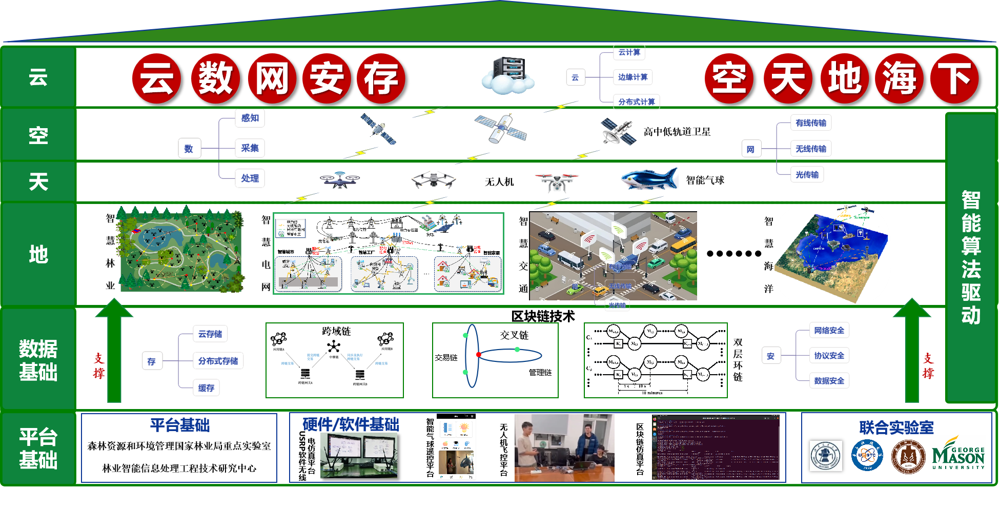
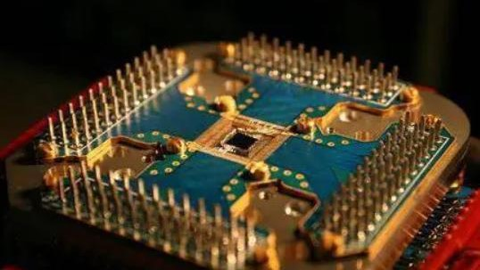

团队简介
北京林业大学智能优化与网络实验室(Laboratory of Intelligent Optimization and Networks, LION) 隶属于北京林业大学信息学院（人工智能学院）。以围绕国家科技发展战略需求、服务社会发展的宗旨，在无人机（包括定位、避障、导航、三维空间重构等）、网络智能（包括边缘计算、联邦学习等）、物联网（数据采集、无线通信）、安全隐私保护（无人机安全、物理层安全、区块链）等方向开展研究工作。团队承担或参与了 国家自然科学重点/联合/面上/青年基金项目、国家重点研发计划课题、北京市自然科学基金、中国科协人才托举工程项目、中国博士后科学基金、美国自然科学基金等数十个项目，取得了一系列重要的研究成果。近年来，团队已在主流的国际期刊和会议上发表论文100多篇，包括 IEEE/ACM Transactions on Networking，IEEE Transactions on Wireless Communications，IEEE Transactions on Cognitive Communications and Networking，IEEE Transactions on Intelligent Transportation Systems，IEEE Communications Magazine等。
团队以具身智能无人机为核心，根据研究方向分为三个研究小组: 智能网络组、边缘智能组和网络安全组。智能网络组专注于无线传感器网络、数据采集、路径规划、网络算法与系统优化设计等方面研究; 边缘智能组专注于边缘计算、网络人工智能、定位、导航、避障、三维建模、大模型等方面的研究；网络安全组专注于无线通信物理层安全、联邦学习安全、无人机系统安全、大模型安全、边缘计算安全等方面的研究。每个研究小组由青年老师带头，由10-20名硕士组成。研究团队新加入的成员可以在配合团队整体建设方向的情况下，根据自身兴趣选择合适的研究方向。
研究方向

智能网络组：
无线传感器网络：将云计算与网络技术相结合，实现网络资源虚拟化，提升云网服务质量。
利用可编程技术进行任务卸载，实现数据边传边算，推动算网融合发展。
包含两大核心目标, 一是Network for AI, 即构建支持AI业务的网络基础设施; 二是AI for Network, 即利用人工智能赋能网络。
网络智能组：
边缘计算：研究如何在靠近数据源头的网络边缘侧，进行任务卸载，服务迁移决策等，以降低终端设备服务请求的延迟。
研究如何进行网络和人工智能相结合，以提高服务质量，方便进行网络的管理，运营和维护。
研究如何利用物联网把传感器、控制器、机器、人员和物等通过新的高效的方式联在一起，形成人与物、物与物相联，实现信息化、远程管理控制和智能化的网络。
量子网络组：
量子协议设计：针对量子数据网络进行协议设计，以实现量子状态的端到端可靠传输。
研究如何利用经典网络作为量子网络的辅助支撑，提高量子网络的性能。
在多任务量子网络中，对量子资源进行优化，提高分布式量子计算系统的性能。
